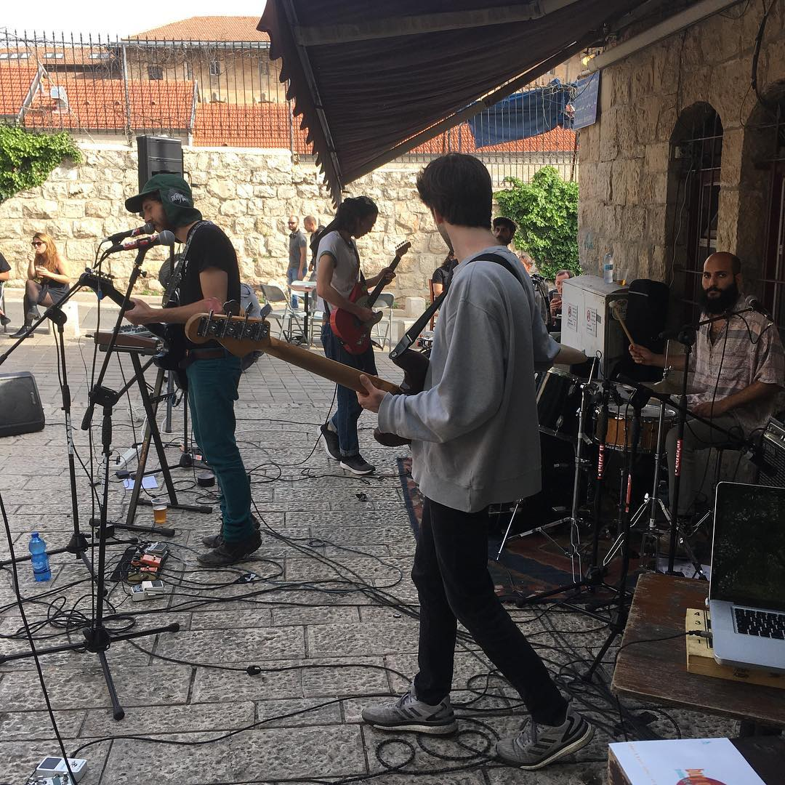
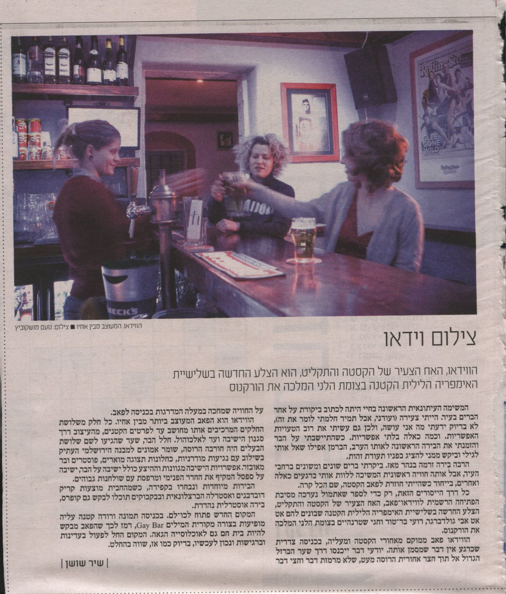

התקליט, הקסטה והוידאו
מקום

התקליט
ב־2007 החבורה שניהלה את הסטארדאסט, אבי גולדברגר, חגי שטרנהיים ורועי בר טור, רצתה לפתוח מקום חדש מחוץ לנחלת שבעה העמוסה תיירים. הם פתחו את התקליט ברחוב יוחנן הורקנוס מתוך מחשבה שיהיה להם יותר מרחב, גם פיזי וגם של חופש לעשות את מה שהם רוצים, שיהווה פינה רגועה משלהם להמשיך בה את הקו שהתוו בסטארדאסט.
התקליט נחשב נגיש יותר ומיועד לקהל רחב יותר בתכנים ובמוזיקה; בין ההופעות שהתארחו שם היו אסף אבידן בתחילת דרכו, ירמי קפלן, ואירועים כגון ערב זיכרון לכץ מהסינדרום, מקום להופעות בשנות ה־90, שנפטר מסרטן.
הקסטה היה חלל שהיה חלק מהמחסן של התקליט וב־2009 עלה רעיון לפתוח בו בר מזערי. בהתחלה לא ידעו מה יהיו האופי והאווירה במקום, ועברו מספר חודשים עד שקיבל צביון שאהבו. חגי שטרנהיים רצה לפתוח מקום שיהיו בו דברים יותר אלטרנטיביים וקיצוניים מהתקליט, והקסטה התפתחה להיות הדבר שאליו כיוון. בין האנשים שהשפיעו על האופי של המוזיקה, התקלוטים וההופעות היו הברמנים שעבדו במקום. בדור הראשון שפעל ברוח הנוכחית של המקום היו ערן סיבול וינון פרס (חלק מקולקטיב No Coast), והם הביאו הרבה מהסטייל של המוזיקה שמושמעת בו. מהשנים הראשונות המקום היה קרוב למחלקת המוזיקה של מוסררה, הרבה מהעובדים בקסטה למדו שם והופיעו עם המוזיקה שלהם, וכן סטודנטים נוספים מהמחלקה הופיעו בו. צוות הקסטה תמיד היה פתוח לתכנים ניסיוניים וקיצוניים יותר, מוזיקה אלקטרונית ובכלל, וכך גם הקהל שמגיע למקום.
אחד האירועים המייצגים ביותר בקסטה הוא מסיבת יום ההולדת המסורתית שמתקיימת מדי שנה. מאז יום הולדת שנה למקום הפורמט התקבע על מסיבה בחמישי בלילה והופעות בשישי בצהריים ברחבה שמחוץ לבר, ובשלב מסוים בערב ההופעות נכנסות פנימה עד הלילה. הרבה אנשים מופיעים באירוע הזה בכל שנה, לפעמים כשמונה הרכבים וחמישה דיג'יים. מלבד זאת הופעות ואירועים זכורים אחרים היו הופעות של הגרייט מאשין, הופעה של המסך הלבן על גבי שולחן בחוץ, רד אקסס לפני הפריצה שלהם – הופיעו בקסטה ואחרי כמה חודשים בברצלונה, בפסטיבל סונאר, מול 20 אלף איש; מסיבות של פאקוטק, שתקלטו שם פעמים רבות; ערבים של רעש רקורדס.

קוסטה קפלן מופיע מחוץ לקסטה, 2018

ידיעה על פתיחת הוידיאו, ידיעות ירושלים 2012
הרבה מהלקוחות בברים שלהם הם להט"בים ומרגישים בנוח להגיע, משום הפתיחות והקבלה שאפיינו אותם מאז ומתמיד. היה להם חלל פנוי נוסף וב־2012 לאבי גולדברגר היה רעיון לפתוח בו מקום שהייחוד שלו הוא פניה לקהל הזה, וכך נולד הוידיאו. לקח למקום זמן מה לתפוס אבל היום הוידיאו הוא הגיי בר הפעיל למשך הזמן הארוך ביותר בירושלים. האופי שלו הוא של פאן, מסיבות, המוזיקה היא פופ ויש לו רחבת ריקודים קטנה ופעילה. המטרה בו היא שאנשים יהנו וירגישו בנוח. הייחוד שלו, לדברי שטרנהיים, הוא המיקום שלו בעיר יוצאת דופן, שמרנית, דתית ומעורבת, והקהל המגוון שהוא מושך, להט"בים ולא-להט"בים, חיילים, ערבים, דתיים, חילוניים, תיירים. הכל מרגיש בו בנוח עם הכל.
במידה מסוימת הרוח של הקסטה וגם של הוידאו הושפעה מינקי בכר, אושיית ברים ירושלמית בשנות ה־80 וה־90, איש לבבי ופתוח שהיה יושב בסטארדאסט ומספר על מעשיו. היו לו ברי גייז כגון זמן אמיתי וה־Q בכיכר ציון, בתקופה שמרנית הרבה יותר.
חגי שטרנהיים הוא גם בעלים שותף במועדון הפרגמון שנמצא בקומה מתחת לוידיאו.